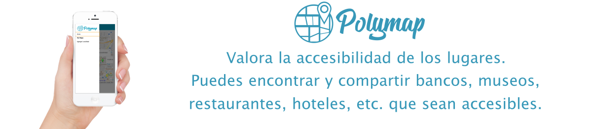

<link rel="import" href="../bower_components/polymer/polymer-element.html">
<link rel="import" href="../bower_components/google-map/google-map.html">
<link rel="import" href="../bower_components/k-speech/k-speech.html">
<link rel="import" href="../../bower_components/iron-media-query/iron-media-query.html">


<link rel="import" href="shared-styles.html">

<dom-module id="my-home">
  <template>
    <style include="shared-styles">
      :host {
        display: block;
        padding: 10px;
      }
      .fondo{
        width: 100%;
      }
      .marcador{
        width: 20%;
        margin-top: 5%;
      }
      .texto{
        position: absolute;
        width: 90%;
      }
      .titulo{
        font-size: 60px;
        color: white;
        text-align: center;
      }
      .cuerpo{
        font-size:40px;
        color: white;
        text-align: justify;
      }
      .card{
        width: 33%;
        display: inline-block;
        margin: 0px !important;
        padding: 0px !important;
        text-align: center; 
      }
      .agregar{
        background: #009dbe;
        color: white;
        border: transparent;
        font-size: 30px;
        margin-bottom: 2%;
      }
      .agregar:hover{
        background: white;
        color: #009dbe;
        -webkit-transform: scale(1.1);
        -ms-transform: scale(1.1);
        transform: scale(1);
        border: transparent;
      }
      p{
        font-size: 24px;
      }
    </style>
   
   <iron-media-query query="(min-width: 1024px)" query-matches="{{wide}}"></iron-media-query>
   <iron-media-query full query="print" query-matches="{{print}}"></iron-media-query>
    <div class="item" wide-layout$="{{wide}}">
        <div class="description">
          <template is="dom-if" if="{{!wide}}">
            <!--MOVIL-->
            <div class="card" style="width: 99%;margin-bottom: 2% !important;">
              
              <p>Accesible: Verde</p>
            </div>
            <div class="card" style="width: 99%;margin-bottom: 2% !important;">
              
              <p>Parcialmente Accesible: Amarillo</p>
            </div>
            <div class="card" style="width: 99%;margin-bottom: 2% !important;">
              
              <p>No Accesible: Rojo</p>
            </div>
            <div class="card" style="width: 99%;margin-top: 1% !important;">
              <h3>Sube un nuevo lugar</h3>
              <p>Elige una ubicación dentro del mapa y detalla que tan accesible es.</p>
              <button class="agregar"  href="[[rootPath]]place">Agregar</button>
            </div>
          </template>
          <template is="dom-if" if="{{wide}}">
            <!--DESKTOP-->
            <div class="card">
              
              <p>Accesible: Verde</p>
            </div>
            <div class="card">
              
              <p>Parcialmente Accesible: Amarillo</p>
            </div>
            <div class="card">
              
              <p>No Accesible: Rojo</p>
            </div>
            <div class="card" style="width: 100%;margin-top: 1% !important;">
              <h2>Sube un nuevo lugar</h2>
              <p>Elige una ubicación dentro del mapa y detalla que tan accesible es.</p>
              <button class="agregar"  href="[[rootPath]]place">Agregar</button>
            </div>
          </template>
        </div>
      </div>
    <k-speech auto-play 
    text    = "Polymap, Valora la accesibilidad de los lugares. Puedes encontrar y compartir bancos, museos, restaurantes, hoteles, etc. que sean accesibles."
    volume  = "1"
    rate    = "1"
    pitch   = "1">
    </k-speech>
    
  </template>

  <script>
    class MyHome extends Polymer.Element {
      static get is() { return 'my-home'; }
    
    static get properties() {
        return {
          page: {
            type: String,
            reflectToAttribute: true,
            observer: '_pageChanged',
          },
          routeData: Object,
          subroute: String,
          rootPath: String,
        };
      }

      static get observers() {
        return [
          '_routePageChanged(routeData.page)',
        ];
      }

      _routePageChanged(page) {
        this.page = page || 'home';
        if (!this.$.drawer.persistent) {
          this.$.drawer.close();
        }
      }

      _pageChanged(page) {
        var resolvedPageUrl = this.resolveUrl('my-' + page + '.html');
        Polymer.importHref(
            resolvedPageUrl,
            null,
            this._showPage404.bind(this),
            true);
      }

      _showPage404() {
        this.page = 'view404';
      }
    }

    window.customElements.define(MyHome.is, MyHome);
  </script>
</dom-module>
